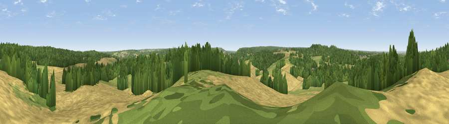

Viewpoint near Old Wives Lees
#26764 in England · top 49% of its area beats it · near Old Wives LeesThe view, rendered

A 360° render of this exact spot computed from the terrain model, tree cover and land cover — summer colours, afternoon light, calibrated against photographs of famous viewpoints. Real trees, hedges and buildings will differ in detail.
The panorama
Grey silhouette: terrain skyline in each direction (720 bearings, Earth curvature and refraction included). Dashed green: skyline with trees (+15 m) and buildings (+8 m) as obstacles. Blue strip: how far the ground is visible on each bearing.
Where the view opens
Wedge length = distance to the farthest visible ground on that bearing (vegetation-aware). Rings at 10, 25 and 50 km.
What fills the view
40% cropland · 35% woodland · 25% grassland ·
Angular shares of the visible panorama (visual magnitude), not map area. Landscape diversity 0.49 (0–1 Shannon).
Key numbers
More beautiful places nearby
The staircase of upgrades: each row has a higher view potential than everything closer. Driving times are estimates from straight-line distance, calibrated against real road routing — check an actual route before setting out.
| Place | Direction | Drive | Score |
|---|---|---|---|
| The Mount (Popsy's View) | WSW · 2 km | ~6 min | 61.7 |
| Viewpoint near Boughton Aluph | SSW · 8 km | ~16 min | 66.7 |
| Viewpoint near Wye | S · 9 km | ~18 min | 70.9 |
| Viewpoint near Westwell | SW · 11 km | ~21 min | 72.2 |
| Tolsford Hill | SSE · 19 km | ~33 min | 77.9 |
| Viewpoint near Capel-le-Ferne | SE · 25 km | ~40 min | 80.2 |
| Viewpoint near Willingdon | SW · 72 km | ~96 min | 83.4 |
| Wilmington Hill | SW · 74 km | ~97 min | 85.4 |
51.26184, 0.96160 · source: screening · position refined by local search. Computed location — check access rights before visiting.